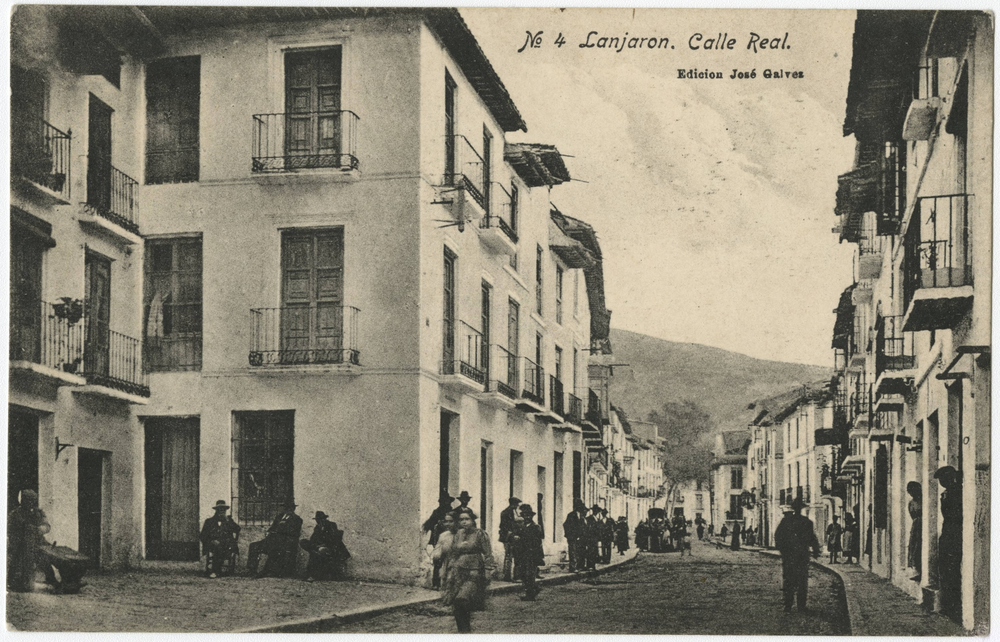
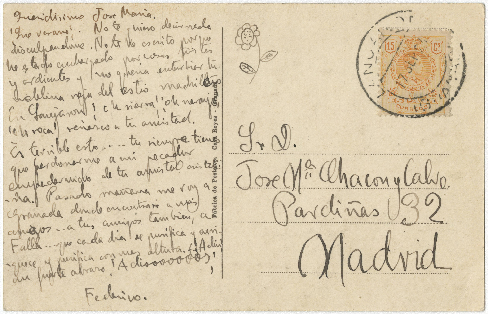

Tarjeta postal de Federico García Lorca a José María Chacón y Calvo
Editada por: Mayda Herrera
Colección: Federico
García Lorca Papers, Library Digital Collections, University of Miami
ID: chc5324000010Lugar y fecha: Lanjarón (España), 17 de septiembre de 1924
Tamaño:
14cm
9cm
Nota:
Esta es una postal enviada por Federico García Lorca desde Lanjarón a José María
Chacón y Calvo a su casa de calle Pardiñas 32 en Madrid. La postal muestra una
foto de Lanjarón, un pueblo en la provincia de Granada, principalmente conocido
por sus balnearios, bares, castillos, y su agua embotellada proveniente de los
manatiales naturales de la región (EpComp 248; Ripoll 7: 56).

Nº 4 Lanjarón. Calle Real
Edición José Gálvez

[Dibujo de una flor ]
Queridísimo José María.
¡Qué verano! No te quiero decir nada disculpándome. / No te he escrito porque he
estado embargado por cosas tristes y/ ardientes y no quería enturbiar tu neblina
roja de estío madrileño./ En Lanjarón ¡oh sierra! ¡oh naranjo! ¡oh roca! Renazco a
tu/ amistad.
Es terrible esto… tu siempre tienes que perdonarme a mi / pecador empedernido de
tu amistad cristalina. Pasado mañana / me voy a Granada donde encontraré a mis
amigos… a tus amigos/ también, a Falla.. que cada día se purifica y enriquece y
purifica/ con más altura… ¡Adiós!
Un fuerte abrazo ¡Adiooooooos!
Federico